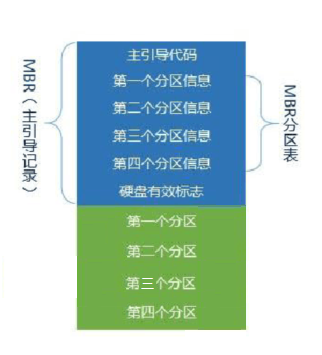
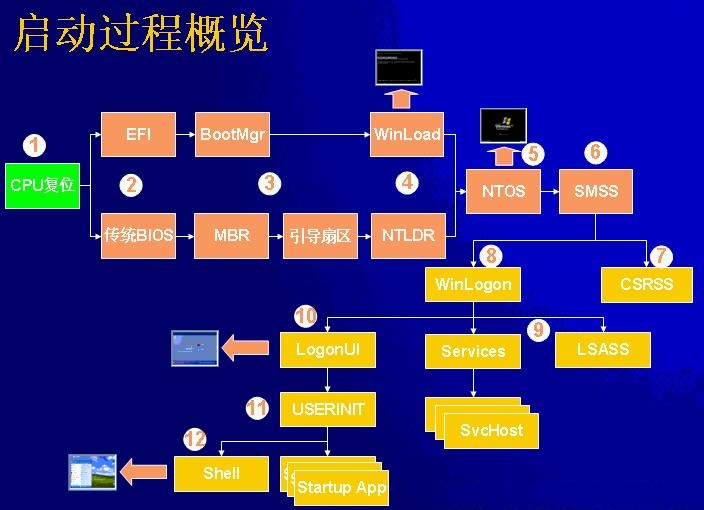

- POST:Power-On Self Test;
- 定位引导设备（存储在CMOS中或按功能键定位引导设备，可以是硬盘、软盘、光盘或U盘）
- 从引导设备中读取并运行MBR,Master Boot Record.
- 调用Ntldr程序，将处理器由实模式切换为32位平坦内在模式；
- Ntldr加载一个微型的文件系统驱动，找到分区；
- Ntldr检测电脑中安装的os个数，如果有多个则读取Boot.ini多系统启动；
- Ntdetect.com将电脑中当前安装的所有硬件信息收集起来，并列成一个表，交给Ntldr（这个表的信息稍后会被用来创建注册表中有关硬件的键）
- Ntldr载入windows系统的内核文件NtosKrnl.exe和硬件抽象层Hal.dll(大部分服务和应用与硬件交互的中间层）
- 初始化内核（此时可看到windows os的logo和进度条，这一阶段主要完成四项任务）
- 创建Hareware注册表键；
- 对Control Set注册表键进行复制；
- 载入和初始化设备驱动；
- 启动服务；
- 会话管理器启动Winlogon进程，此时用户可以登录，然后同时会加载一些非关键服务；
| 硬件位置 | 代码名称 | 功能 |
| 1 主板BIOS | BIOS | 1 POST |
| 2 显卡BIOS和其它BIOS | ||
| 3 检测系统中安装的一些标准硬件设备，包括CPU、RAM、硬盘、CD-ROM、串口、并口和软驱等设备 | ||
| 2 可用于启动的外部存储设备 (包含启动程序（第一扇区）) |
MBR | MBR会检查硬盘分区表，找到硬盘上的引导分区，然后将引导分区上的操作系统引导扇区调入内存，并执行其NTDLR文件(xp是系统加载器NTDLR，win7是bootmgr.exe）。 |
| 3 分区表中的第一个活动分区 | 1 分区引导记录 | |
| 2 Boot Manager | XP:NTLDR-boot.ini; win7:BootMGR读取BCD，列出启动菜单，winload.exe; XP&win7:BootMGR读取boot.ini和BCD，列出启动菜单，XP：NTLDR(win7:winload.exe); |
|
| 4 OS装入内存 | OS |
每次电脑启动时，必须有且只有一个活动分区装载启动文件（NTLDR,BootMGR等），因此活动分区就是系统分区；
补充说明
1 BIOS+MBR>属于预引导阶段；
On the parentboard is a program called system BIOS.The BIOS contains low-level I/O software,including procedures to read the keyboard,write to the screen,and do disk I/O,among other thins.
When the computer is booted,the BIOS started.It first checks to see how much RAM is stalled and whether the keyboard and other basic devices are installed and responding correctly.It starts out by scanning the ISA and PCI buses to detect all the devices attached to them.these devices are recorded.If the devices present are different from when the system was last booted,the new devices are configured.
The BIOS then determine the boot device by trying a list of devices stored in the CMOS memory.The user can change this list by entering a BIOS configuration program just after booting.Typically,an attempt is made to boot from the floppy disk.If neither a floppy nor a CD-ROM is present,the system is booted from the hard disk.The first sector from the boot device.This sector contains a prgram that normally examines the partition table at the end of the boot sector to determine which partition is active.Then a secondary boot loader is read in from that partition.The loader reads in the operating system from the active partition and starts it.
The operating system then queries the BIOS to get the configuration information.For each device,it checks to see if it has the device driver.If not,it asks the user to insert a floppy disk or CD-ROM containing the driver(supplied by the device's manufacturer).Once it has all the device drivers,the operating system loads them into the kernel.Then it initializes its tables,creates whatever backgroup processes are need,and starts up a login program or GUI on each terminal.
计算机启动过程图文详解（一）----计算机初始化启动过程
我们每天使用计算机必须要经过的一个步骤就是启动了，但是，你是否知道计算机到底是怎样启动的呢？或许，你会认为这并不重要，是的，对于我们一般人而言，它确实不重要，事实上，我们更关心它启动得有多快，但是，这却实在是一个很“基本”的问题，每天都在用计算机，却不知道它是怎样启动的，似乎总感觉有些别扭（当然了，多数人都不知道的话也就没什么好别扭的了）。下面就为大家介绍一下我们使用的计算机到底是怎样启动起来的，由于这个问题比较大，我将它分为了两部分来介绍，这样可能比较好接受一些。这次只介绍前半部分（即和操作系统无关的部分）。另外，为方便大家理解，我特意制作了相关的流程图，建议大家对照着看。
如果你愿意了解一下，希望你能通过下面的介绍弄懂这个问题，如果你没什么兴趣，也没关系，毕竟，它是个比较边缘的东西，不太了解也行。
像大多数介绍此知识的文章一样，这里还是需要先介绍一下两个基本而重要的概念。
BIOS：即“Basic Input/Output System”（基本输入输出系统），它是一组被“固化”在计算机主板上的一块ROM中直接关联硬件的程序，保存着计算机最重要的基本输入输出的程序、系统设置信息、开机后自检程序和系统自启动程序，其主要功能是为计算机提供最底层的、最直接的硬件设置和控制，它包括系统BIOS（主板BIOS）．其它设备BIOS（例如IDE控制器BIOS、显卡BIOS等）其中系统BIOS占据了主导地位.计算机启动过程中各个BIOS的启动都是在它的控制下进行的.
内存地址：我曾在虚拟内存的介绍中提到过它，我们知道，内存空间的最基本单位是位，8位视为一个字节，即我们常用的单位B，内存中的每一个字节都占有一个地址（地址是为了让CPU识别这些空间，是按照16进制表示的），而最早的8086处理器只能识别1MB（2的20次方B）的空间，这1MB内存中低端（即最后面）的640KB就被称为基本内存，而剩下的内存（所有的）则是扩展内存。这640KB的空间分别由显存和各BIOS所得。
现在正式开始介绍计算机的启动过程（从打开电源到操作系统启动之前）
1、当电源开关按下时，电源开始向主板和其他设备供电，此时电压并不稳定，于是，当主板认为电压并没有达到CMOS中记录的CPU的主频所要求的电压时，就会向CPU发出RESET信号（即复位，不让CPU进一步运行），不过仅一瞬间不稳定的电压就能达到符合要求的稳定值，此时复位信号撤销，CPU马上从基本内存的BIOS段读取一条跳转指令，跳转到BIOS的真正启动代码处，如此，系统BIOS启动，此后的过程都由系统BIOS控制。
2、系统BIOS启动后会进行加电自检POST（Power On Self Rest）。不过这个过程进行得很快，它主要是检测关键设备（如电源、CPU芯片、BIOS芯片、基本内存等电路是否存在以及供电情况是否良好。如果自检出现了问题，系统喇叭会发出警报声（根据警报声的长短和次数可以知道到底出现了什么问题）。
3、如果自检通过，系统BIOS会查找显卡BIOS，找到后会调用显卡BIOS的初始化代码，此时显示器就开始显示了（这就是为什么自检失败只能靠发声进行提醒了）。显卡BIOS会在屏幕上显示显卡的相关信息（不过现在的笔记本似乎并不显示这个）。
4、显卡检测成功后会进行其他设备的测试，通过后系统BIOS重新执行自己的代码，并显示自己的启动画面，将自己的相关信息显示在屏幕上，而后会进行内存测试（这些在现在的计算机上也看不到了），仅仅是短暂出现系统BIOS设置页面，此时就可以对系统BIOS进行需要的设置了，完成后会重新启动。
5、此后BIOS会检测系统的标准硬件（如硬盘、软驱（虽然现在很多计算机已没有软驱了）、串行和并行接口等），检测完成后会接着检测即插即用设备，如果有的话就为该设备分配中断、DMA通道和I/O端口等资源，到了这里，所有的设备都已经检测完成了，老机会进行一次清屏并显示一个系统配置表，如果和上次启动相比出现了硬件变动，BIOS还会更新ESCD，即“Extended System Configuration Data”（扩展系统配置数据），它是系统BIOS用来与操作系统交换硬件配置信息的数据，这些数据被存放在CMOS中。现在的机器则不再显示这些了。
6、当上面的所有步骤都顺利进行以后，BIOS将执行最后一项任务：按照用户指定的启动顺序进行启动（即我们经常需要用到的设置系统从哪里启动，一般默认是硬盘，如果需要安装系统，还会设置为光驱或USB设备），注意，这里是指的启动顺序，如果设置为从光驱启动，而光驱中又没有光盘的话，系统还是会接着从硬盘启动的。
至此，操作系统启动之前的所有启动步骤都完成了，如果从硬盘启动的话，接着就是操作系统的启动过程了，关于这一部分，不同的系统也是存在差别的，我们谨以xp和vista为例，由于内容较多，就下一次再介绍吧。
下面是上面的启动过程的流程图，对照此图理解上面的内容可能会更方便些：


计算机启动过程图文详解（二）----操作系统启动过程
操作系统启动之前的计算机启动过程我已经在《计算机启动过程图文详解（一）----计算机初始化启动过程》一文中详细介绍过，今天就介绍一下初始化启动后的操作系统的启动过程。
我们只介绍Windows系统的启动，由于vista和windows7操作系统的启动采用了全新的方式，所以这里需要对xp和Vista（Windows7与之基本相同）分别介绍。为了不至于导致大家看不明白，我只介绍一个大概的过程。
xp系统的启动
当系统BIOS完成初始化后，会将控制权交给主引导纪录（即MBR：Master Boot Record），MBR会检查硬盘分区表，找到硬盘上的引导分区，然后将引导分区上的操作系统引导扇区调入内存，并执行其NTDLR文件。
NTDLR会将微处理器从实模式（此模式下计算机认为内存为64KB，其他未扩展内存）转换为32位的平面内存模式（此模式下认为CPU可识别的所有内存均是可用内存）。然后，NTDLR启动mini-file system drivers以便它能够识别所有采用NTFS和FAT（FAT32）文件系统的硬盘分区。
此后NTLDR会读取boot.ini文件，以决定应该启动哪一个系统，如果boot.ini中仅显示了一个系统或者将timeout（系统选择页面停留时间）参数设为0的话，这个系统选择页面就不会出现而是直接启动默认的系统。
而如果boot.ini中含有多个启动引导项，当选择了不同的系统后计算机接下来的启动流程就会产生区别，如果选择的不是xp，NTLDR会读取bootsect.dos来启动相应系统，如果选择了xp的话，就会接着转入硬件检测阶段。
在这个阶段，ntdetect.com会收集计算机的硬件信息列表并将其返回到NTLDR中，以便以后将这些信息写入注册表（具体而言是HKEY_LOCAL_MACHINE下的hardware）中。
然后会进行硬件配置选择，如果计算机含多个硬件配置，会出现配置选择页面，如果仅有一个的话，系统直接进入默认配置。
此后开始加载xp内核，NTLDR首先加载ntoskrnl.exe（即xp系统内核），不过此时并未初始化内核，而是紧接着加载了硬件抽象层（即HAL，一个hal.dll文件），然后加载底层设备驱动程序和需要的服务。
完成这些后才开始初始化内核，此时我们就能看到xp的LOGO和启动进度条了，在进度条运动的过程中，内核使用刚才ntdetect.com收集到的意见配置信息创建HKEY_LOCAL_MACHINE的hardware键。然后创建计算机数据备份，初始化并加载设备驱动程序，Session Manager启动xp的高级子系统及其服务并有win32子系统启动Winlogon进程。
Winlogon.exe会启动Local Security Authority，此时会显示xp的欢迎屏幕或者登陆确认框（如果设置了多账户或密码的话）。这个时候，系统还在继续初始化刚才没有完成的驱动程序。
欢迎屏幕结束或者用户正确登陆后， Service Controller最后还需要检查是否还有服务需要加载并进行加载。此后xp桌面出现，系统启动完成。
Vista（Windows7）的启动
Vista和Windows7的启动过程就简单多了（其实是将启动步骤进行了简化），它采用了全新的启动方式。具体如下：
MBR得到控制权后，同样会读取引导扇区，以便启动Windows启动管理器的bootmgr.exe程序，
Windows启动管理器的bootmgr.exe被执行时就会读取Boot Confi guration Data store（其中包含了所有计算机操作系统配置信息）中的信息，然后据此生成启动菜单，当然，如果只安装了一个系统，启动引导选择页不会出现，而如果安装并选择了其他系统，系统就会转而加载相应系统的启动文件。
启动Vista时，同样会加载ntoskrnl.exe系统内核和硬件抽象层hal.dll，从而加载需要的驱动程序和服务。
内核初始化完成后，会继续加载会话管理器smss.exe（注意，正常情况下这个文件存在于Windows/system32文件夹下，如果不是，很可能就是病毒）。
此后，Windows启动应用程序wininit.exe（正常情况下它也存在于Windows/system32文件夹下，如果不是，很可能是病毒）会启动,它负责启动services.exe(服务控制管理器)、lsass.exe(本地安全授权)和lsm.exe(本地会话管理器)，一旦wininit启动失败，计算机将会蓝屏死机。
当这些进程都顺利启动之后，就可以登录系统了。至此，Vista（Windows7）启动完成。
另外，补充一点小知识：我们知道，在Vista或Windows7系统下安装xp后，开机时就会直接启动xp，并不出现系统启动的选择页，这是因为安装xp时，它会重写MBR而将Vista或Windows7的引导记录覆盖掉，而在xp下安装Vista或Windows7后就不存在这个问题了，这是因为虽然Vista和Windows7虽然也会覆盖引导记录，但是它也会将原有的引导程序保存，引导权虽然同样被Vista或Windows7抢夺，但由于它们支持跳转到以前的引导程序上，所以可以直接显示多系统页面。
最后，由于时间关系，我没有专门制作流程图，就附上找到的一张系统启动流程图吧。此图比较简单，并没有列出全部的启动流程，但附带了计算机初始化启动的过程，比较全面了。如图：

boot的含义
先问一个问题，”启动”用英语怎么说？
回答是boot。可是，boot原来的意思是靴子，”启动”与靴子有什么关系呢？ 原来，这里的boot是bootstrap（鞋带）的缩写，它来自一句谚语：
"pull oneself up by one's bootstraps"
字面意思是”拽着鞋带把自己拉起来”，这当然是不可能的事情。最早的时候，工程师们用它来比喻，计算机启动是一个很矛盾的过程：必须先运行程序，然后计算机才能启动，但是计算机不启动就无法运行程序！
早期真的是这样，必须想尽各种办法，把一小段程序装进内存，然后计算机才能正常运行。所以，工程师们把这个过程叫做”拉鞋带”，久而久之就简称为boot了。
计算机的整个启动过程分成四个阶段。
一、第一阶段：BIOS
上个世纪70年代初，”只读内存”（read-only memory，缩写为ROM）发明，开机程序被刷入ROM芯片，计算机通电后，第一件事就是读取它。
这块芯片里的程序叫做”基本輸出輸入系統”（Basic Input/Output System），简称为BIOS。
1.1 硬件自检
BIOS中主要存放的程序包括：自诊断程序（通过读取CMOS RAM中的内容识别硬件配置，并对其进行自检和初始化）、CMOS设置程序（引导过程中，通过特殊热键启动，进行设置后，存入CMOS RAM中）、系统自动装载程序（在系统自检成功后，将磁盘相对0道0扇区上的引导程序装入内存使其运行）和主要I/O驱动程序和中断服务（BIOS和硬件直接打交道，需要加载I/O驱动程序）。
BIOS程序首先检查，计算机硬件能否满足运行的基本条件，这叫做”硬件自检”（Power-On Self-Test），缩写为POST。
如果硬件出现问题，主板会发出不同含义的蜂鸣，启动中止。如果没有问题，屏幕就会显示出CPU、内存、硬盘等信息。
1.2 启动顺序
硬件自检完成后，BIOS把控制权转交给下一阶段的启动程序。
这时，BIOS需要知道，”下一阶段的启动程序”具体存放在哪一个设备。也就是说，BIOS需要有一个外部储存设备的排序，排在前面的设备就是优先转交控制权的设备。这种排序叫做”启动顺序”（Boot Sequence）。
打开BIOS的操作界面，里面有一项就是”设定启动顺序”。
二、第二阶段：主引导记录
BIOS按照”启动顺序”，把控制权转交给排在第一位的储存设备。即根据用户指定的引导顺序从软盘、硬盘或是可移动设备中读取启动设备的MBR，并放入指定的位置（0x7c000）内存中。
这时，计算机读取该设备的第一个扇区，也就是读取最前面的512个字节。如果这512个字节的最后两个字节是0x55和0xAA，表明这个设备可以用于启动；如果不是，表明设备不能用于启动，控制权于是被转交给”启动顺序”中的下一个设备。
这最前面的512个字节，就叫做”主引导记录”（Master boot record，缩写为MBR）。
2.1 主引导记录的结构
“主引导记录”只有512个字节，放不了太多东西。它的主要作用是，告诉计算机到硬盘的哪一个位置去找操作系统。
主引导记录由三个部分组成：
（1） 第1-446字节：调用操作系统的机器码。（2） 第447-510字节：分区表（Partition table）。
（3） 第511-512字节：主引导记录签名（0x55和0xAA）。
其中，第二部分”分区表”的作用，是将硬盘分成若干个区。
2.2 分区表
硬盘分区有很多好处。考虑到每个区可以安装不同的操作系统，”主引导记录”因此必须知道将控制权转交给哪个区。
分区表的长度只有64个字节，里面又分成四项，每项16个字节。所以，一个硬盘最多只能分四个一级分区，又叫做”主分区”。
每个主分区的16个字节，由6个部分组成：
（1） 第1个字节：如果为0x80，就表示该主分区是激活分区，控制权要转交给这个分区。四个主分区里面只能有一个是激活的。（2） 第2-4个字节：主分区第一个扇区的物理位置（柱面、磁头、扇区号等等）。
（3） 第5个字节：主分区类型。
（4） 第6-8个字节：主分区最后一个扇区的物理位置。
（5） 第9-12字节：该主分区第一个扇区的逻辑地址。
（6） 第13-16字节：主分区的扇区总数。
最后的四个字节（”主分区的扇区总数”），决定了这个主分区的长度。也就是说，一个主分区的扇区总数最多不超过2的32次方。
如果每个扇区为512个字节，就意味着单个分区最大不超过2TB。再考虑到扇区的逻辑地址也是32位，所以单个硬盘可利用的空间最大也不超过2TB。如果想使用更大的硬盘，只有2个方法：一是提高每个扇区的字节数，二是增加扇区总数。
三、第三阶段：硬盘启动
这时，计算机的控制权就要转交给硬盘的某个分区了，这里又分成三种情况。
3.1 情况A：卷引导记录
上一节提到，四个主分区里面，只有一个是激活的。计算机会读取激活分区的第一个扇区，叫做”卷引导记录”（Volume boot record，缩写为VBR）。
“卷引导记录”的主要作用是，告诉计算机，操作系统在这个分区里的位置。然后，计算机就会加载操作系统了。
3.2 情况B：扩展分区和逻辑分区
随着硬盘越来越大，四个主分区已经不够了，需要更多的分区。但是，分区表只有四项，因此规定有且仅有一个区可以被定义成”扩展分区”（Extended partition）。
所谓”扩展分区”，就是指这个区里面又分成多个区。这种分区里面的分区，就叫做”逻辑分区”（logical partition）。
计算机先读取扩展分区的第一个扇区，叫做”扩展引导记录”（Extended boot record，缩写为EBR）。它里面也包含一张64字节的分区表，但是最多只有两项（也就是两个逻辑分区）。
计算机接着读取第二个逻辑分区的第一个扇区，再从里面的分区表中找到第三个逻辑分区的位置，以此类推，直到某个逻辑分区的分区表只包含它自身为止（即只有一个分区项）。因此，扩展分区可以包含无数个逻辑分区。
但是，似乎很少通过这种方式启动操作系统。如果操作系统确实安装在扩展分区，一般采用下一种方式启动。
3.3 情况C：启动管理器
在这种情况下，计算机读取”主引导记录”前面446字节的机器码之后，不再把控制权转交给某一个分区，而是运行事先安装的”启动管理器”（boot loader），由用户选择启动哪一个操作系统。
Linux环境中，目前最流行的启动管理器是Grub。
对于grub而言，在MBR中的446字节的引导程序属于GRUB的开始执行程序，通过这段程序，进一步执行stage1.5或是stage2的执行程序，将在下面详细介绍执行过程。
其中stage1.5或是stage2便属于阶段2引导的过程了，stage2过程也是作为GRUB kernel的核心代码出现。Stage1.5过程（对于GRUB而言存在stage1.5，GRUB2则不存在）的功能很单一，主要就是为了引导stage2过程服务。由于stage2过程的代码存放在文件系统下的boot分区目录中，因此stage1.5过程就是需要提供一个文件系统的环境，而该文件系统环境需要保证系统可以找到stage2过程的文件，那么stage1.5阶段提供的文件系统需要是boot文件系统所对应的，这个在执行grub install过程中就已经确定了。stage2过程中，主要会把系统切换到保护模式，设置好C运行时环境，找到config文件（事实上就是menulist文件），如果没有找到就执行一个shell，等待用户的执行。然后的工作就变成了输入命令->解析命令->执行命令的循环中。当然该阶段引导的最终状态就是执行boot命令，将内核和initrd镜像加载进入内存中，进而将控制权转交给内核。
四、第四阶段：操作系统
控制权转交给操作系统后，操作系统的内核首先被载入内存。
以Linux系统为例，先载入/boot目录下面的kernel。内核加载成功后，第一个运行的程序是/sbin/init。它根据配置文件（Debian系统是/etc/initab）产生init进程。这是Linux启动后的第一个进程，pid进程编号为1，其他进程都是它的后代。
然后，init线程加载系统的各个模块，比如窗口程序和网络程序，直至执行/bin/login程序，跳出登录界面，等待用户输入用户名和密码。
至此，全部启动过程完成。
另外在大磊的博客中还有许多细节部分：
BIOS启动细节：
a) 按下电源开关，电源就开始向主板和其它设备供电；当芯片组检测到电源已经开始稳定供电了(当然从不稳定到稳定的过程只是一瞬间的事情)，它便撤去RESET信号(如果是手工按下计算机面板上的Reset按钮来重启机器，那么松开该按钮时芯片组就会撤去RESET信号)；CPU马上就从地址FFFF:0000H 处开始执行指令，放在这里的只是一条跳转指令，跳到系统BIOS中真正的启动代码处。
b) 系统BIOS的启动代码首先进行POST(Power－On Self Test，加电后自检)。POST的主要检测系统中一些关键设备是否存在和能否正常工作，例如内存和显卡等设备；由于POST是最早进行的检测过程，此时显卡还没有初始化，如果系统BIOS在进行POST的过程中发现了一些致命错误，例如没有找到内存或者内存有问题(此时只会检查640K常规内存)，那么系统BIOS就会直接控制喇叭发声来报告错误，声音的长短和次数代表了错误的类型；在正常情况下，POST过程进行得非常快，几乎无法感觉到它的存在。POST结束之后就会调用其它代码来进行更完整的硬件检测。
c) 接下来系统BIOS将查找显卡的BIOS。前面说过，存放显卡BIOS的ROM芯片的起始地址通常设在C0000H处，系统BIOS在这个地方找到显卡BIOS之后就调用它的初始化代码，由显卡BIOS来初始化显卡。此时多数显卡都会在屏幕上显示出一些初始化信息，介绍生产厂商、图形芯片类型等内容，不过这个画面几乎是一闪而过。系统BIOS接着会查找其它设备的BIOS程序，找到之后同样要调用这些BIOS内部的初始化代码来初始化相关的设备。
d) 查找完所有其它设备的BIOS之后，系统BIOS将显示出它自己的启动画面，其中包括有系统BIOS的类型、序列号和版本号等内容。
e) 接着系统BIOS将检测和显示CPU的类型和工作频率，测试所有的RAM，并同时在屏幕上显示内存测试的进度。可以在CMOS设置中自行决定使用简单耗时少或者详细耗时多的测试方式。
f) 内存测试通过之后，系统BIOS将开始检测系统中安装的一些标准硬件设备，包括硬盘、CD-ROM、串口、并口和软驱等设备，另外绝大多数较新版本的系统BIOS在这一过程中还要自动检测和设置内存的定时参数、硬盘参数和访问模式等。
g) 标准设备检测完毕后，系统BIOS内部支持即插即用的代码将开始检测和配置系统中安装的即插即用设备。每找到一个设备之后，系统BIOS都会在屏幕上显示出设备的名称和型号等信息，同时为该设备分配中断、DMA通道和I/O端口等资源。
h) 到这一步为止，所有硬件都已经检测配置完毕了，多数系统BIOS会重新清屏并在屏幕上方显示出一个表格，其中概略地列出了系统中安装的各种标准硬件设备，以及它们使用的资源和一些相关工作参数。
i) 接下来系统BIOS将更新ESCD(Extended System Configuration Data，扩展系统配置数据)。ESCD是系统BIOS用来与操作系统交换硬件配置信息的一种手段，这些数据被存放在CMOS(一小块特殊的RAM，由主板上的电池来供电)之中。通常ESCD数据只在系统硬件配置发生改变后才会更新，所以不是每次启动机器时都能够看到“Update ESCD… Success”这样的信息。不过，某些主板的系统BIOS在保存ESCD数据时使用了与Windows 9x不相同的数据格式，于是Windows 9x在它自己的启动过程中会把ESCD数据修改成自己的格式。但在下一次启动机器时，即使硬件配置没有发生改变，系统BIOS也会把ESCD的数据格式改回来。如此循环，将会导致在每次启动机器时，系统BIOS都要更新一遍ESCD，这就是为什么有些机器在每次启动时都会显示出相关信息的原因。
j) ESCD更新完毕后，系统BIOS的启动代码将进行它的最后一项工作：即根据用户指定的启动顺序从软盘、硬盘或光驱启动MBR。在这个过程中会按照启动顺序顺序比较其放置MBR的位置的结尾两位是否为0xAA55，通过这种方式判断从哪个引导设备进行引导。在确定之后，将该引导设备的MBR内容读入到0x7C00[1]的位置，并再次判断其最后两位，当检测正确之后，进行阶段1的引导。
EFI启动细节
为了方便计算机访问硬盘，把硬盘上的空间划分成许许多多的区块（英文叫sectors，即扇区），然后给每个区块分配一个地址，称为逻辑块地址（即LBA）。
在MBR磁盘的第一个扇区内保存着启动代码和硬盘分区表。启动代码的作用是指引计算机从活动分区引导启动操作系统（BIOS下启动操作系统的方式）；分区表的作用是记录硬盘的分区信息。在MBR中，分区表的大小是固定的，一共可容纳4个主分区信息。在MBR分区表中逻辑块地址采用32位二进制数表示，因此一共可表示2^32（2的32次方）个逻辑块地址。如果一个扇区大小为512字节，那么硬盘最大分区容量仅为2TB。
GPT磁盘分区结构可用下图简单表示（Windows下基本磁盘）：

可以看到，在GTP磁盘的第一个数据块中同样有一个与MBR（主引导记录）类似的标记，叫做PMBR。PMBR的作用是，当使用不支持GPT的分区工具时，整个硬盘将显示为一个受保护的分区，以防止分区表及硬盘数据遭到破坏。UEFI并不从PMBR中获取GPT磁盘的分区信息，它有自己的分区表，即GPT分区表。
GPT的分区方案之所以比MBR更先进，是因为在GPT分区表头中可自定义分区数量的最大值，也就是说GPT分区表的大小不是固定的。在Windows中，微软设定GPT磁盘最大分区数量为128个。另外，GPT分区方案中逻辑块地址（LBA）采用64位二进制数表示，可以计算一下2^64是一个多么庞大的数据，以我们的需求来讲完全有理由认为这个大小约等于无限。除此之外，GPT分区方案在硬盘的末端还有一个备份分区表，保证了分区信息不容易丢失。
EFI启动的硬盘结构如下：
与传统MBR相比，GPT采用了不同的分区方式。
对于传统MBR，其结构主要如下：

上图即对上文中所述的很形象的说明，在图中看到MBR被分成三个部分，分别是：Bootloader、分别表以及Magic Number。其中Bootloader部分为stage1中被执行的起始部分。
相反，对于EFI系统中所采用的GPT分区方式，则采用了不同于MBR分区方式的形式，从下图中可以发现：

如上图所示，GPT分区表主要包括：保护MBR、首要GPT头、首要GPT、备用GPT、备用GPT头和磁盘数据区。保护MBR与正常的MBR区别不大，主要是分区表上的不同，在保护MBR中只要一个表示为0xEE的分区，以此来表示这块硬盘使用GPT分区表。首要GPT头包含了众多信息，具体内容如下：

分区表头定义了硬盘的可用空间以及组成分区表的项的大小和数量。分区表头还记录了这块硬盘的GUID，记录了分区表头本身的位置和大小（位置总是在LBA1）以及备份分区表头和分区表的位置和大小（在硬盘的最后）。它还存储着它本身和分区表的CRC32校验。固件、引导程序和操作系统在启动时可以根据这个校验值来判断分区表是否有错误，如果出错了，可以使用软件从硬盘最后的备份GPT分区表恢复整个分区表，如果备份GPT也校验错误，那么磁盘将不可用，系统拒绝启动。
接下来主要是128个分区表项，GPT分区表使用简单而直接的方式表示分区。一个分区表项的前16字节是分区类型GUID。例如，EFI系统分区的GUID类型是{C12A7328-F81F-11D2-BA4B-00A0C93EC93B} 。接下来的16字节是该分区的唯一的GUID（这个指的是该分区本身，而之前的GUID指的是该分区的类型）。在接下来是分区其实和末尾的64位LBA编号，以及分区的名字和属性。具体结构如下表：

MBR引导
接下来开始真正的引导过程了，主要说明GRUP的引导。总体上GRUB更像是一个mini os，只不过这个mini os的作用只是加载其他的操作系统，在GRUB中包括stage1、stage1.5（可选）和stage2，其中stage1和stage1.5属于boot loader，stage2属于mini os的内核部分。GRUB中stage1过程主要位于MBR的前446字节中（对于支持GPT分区的磁盘，同样有最开始的512字节作为保护MBR，保护MBR与正常的MBR区别不大，主要是分区表上的不同，在保护MBR中只要一个表示为0xEE的分区，以此来表示这块硬盘使用GPT分区表，不能识别GPT硬盘的操作系统通常会识别出一个未知类型的分区，并且拒绝对硬盘进行操作），之后的64字节为硬盘的分区表，最后两个字节为MBR结束标志位（0xAA55）。
stage1部分占用了446字节，其代码文件是源码目录下stage1/stage1.S文件，汇编后生成一个512字节的boot.img，被写在硬盘的0面0道1扇区中，作为硬盘的MBR。stage1的工作很简单，就是加载0面0道2扇区上的512字节到0×8000，然后跳转到0×8000执行。
在0面0道2扇区上的512字节内容为stage1/start.S文件汇编后生成。该扇区上的内容的作用是加载stage1.5或是stage2过程，并将控制权转交。
Grub引导
在start过程将控制权转交后，接下来就是GRUB的核心过程了。该过程之所以区分stage1.5和stage2，主要原因是GRUB和GRUB2的区别。在GRUB2中，将stage1.5过程集成到了stage2的过程中，所以stage1.5过程仅仅是针对GRUB的。下面将会分别介绍两种GRUB版本的两种过程。
4.1 GRUB中stage1.5过程
Stage1.5过程很无辜，它的作用很单一，但是非常关键。它的主要功用就是构造一个boot分区系统对应的文件系统，这样可以通过文件系统的路径（/boot/grub/）寻找stage2过程需要的core.img，进而加载到内存中开始执行。
Stage1.5存在于0面0道3扇区开始的地方，并一直延续十几k字节的区域，具体的大小与相应的文件系统的大小有关（文中涉及到了0面0道1-3+x扇区，这部分扇区为保留扇区，BIOS不会放置任何数据。正因为如此如果转换到GPT分区形式，系统将不能被正确引导，如上文所示，MBR后面的扇区都被其他内容所占据）。Stage1.5过程被构建成多种不同类型，但是功能类似，下面简单介绍一下基本的stage1.5过程的文件系统。e2fs_stage1_5（针对ext2fs，可引导ext2和ext3文件系统）、fat_stage1_5（针对fat文件系统，可引导fat32和fat16）、ffs_stage1_5、jfs_stage1_5、minix_stage1_5、reiserfs_stage1_5、vstafs_stage1_5和xfs_stage1_5，这些文件被称为stage1.5过程，这些文件每个至少都在11k以上。除此之外还有两个比较特殊的文件，分别为nbgrub和pxegrub，这两个文件主要是在网络引导时使用，只是格式不同而已，他们很类似与stage2，只是需要建立网络来获取配置文件。
由于stage1.5过程中会涉及到多个文件系统对应的文件，因此本文中主要以ext2fs为例进行说明，其他文件系统与此类似，可以同样进行分析理解。
对于ext2fs文件系统，用于生成该文件系统的stage1.5过程文件（e2fs_stage1_5）的代码为stage2/fsys_ext2fs.c文件。
在stage2/filesys.h文件中定义了每个文件系统对外的接口，用于上层调用，作为stage2过程寻找核心代码使用，文件系统一般被定义的接口主要就是三个函数，分别是mount、read和dir函数。对应ext2fs，其定义的函数为：
针对ext2fs有如上的函数名称，每个函数将具体在stage2/fsys_ext2fs.c文件中被定义，这里面没有包含任何的写的过程，对于bootloader而言仅仅读就可以完成任务了，没必要对其系统进行写操作。其中ext2fs_mount函数用于检查文件系统类型，并将superblock读入到内存中；ext2fs_read函数和ext2fs_dir函数用于对文件系统具体的操作。在stage2/fsys_ext2fs.c文件中除了需要对这三个函数的定义之外，还需要文件系统的属性的数据结构（superblock、inode和group结构，这些结构最初被定义在include/linux/ext2_fs.h文件中），通过这些数据结构描述一个文件系统。
如果读者有兴趣可以试着创建新的文件系统的支持，可以参照目前存在的一些文件系统的模板（实例）编写。
4.2 GRUB中stage2过程
GRUB中的核心过程也就是stage2过程了，该过程主要是在文件系统建立以后选择合适的操作系统进行加载并转交控制权，达到最后引导操作系统的目标。由于GRUB属于multi boot loader，因此在引导的时候要进行选择，选择哪种操作系统来运行。在GRUB内部主要包括两种方式，首先是从menu.list中读取显示到屏幕让用户选择，其次是通过grub-shell中定义的命令手动进行启动。本文将在后面介绍这两种方式如何运行，接下来先介绍一下stage2的具体的执行过程。
在上面一节中介绍过，stage1.5过程中将boot分区的文件系统加载了，之后又做了一件事情，就是将控制权转交给stage2，而stage2入口的地方就是stage2/asm.S文件。Stage2/asm.S文件属于汇编代码，主要作用是初始化C语言的运行环境，为下面执行C语言的函数做好准备，在准备好之后，将执行init_bios_info(stage2/common.c)函数。init_bios_info函数的作用是执行一些底层的函数，然后跳转到cmain执行，cmain函数位于stage2/stage2.c文件中。cmain函数内部进行一个死循环，在循环内部首先加载配置文件，显示给用户，在这同时循环一个内层循环，在内层循环中，获取配置文件中的命令，并解析执行。过程中如果没有可用的配置文件，那么进入命令行模式（enter_cmdline函数），如果找到可用的menu，那么开始执行menu的对应的内容（run_menu函数）。
对于enter_cmdline（stage2/stage2.c）函数，将调用find_command（stage2/cmdline.c），进而执行相应命令的函数。
对于run_menu（stage2/stage2.c）函数，将调用stage2/cmdline.c文件中的run_script函数，进而调用find_command，执行相应命令的函数。
这两种方式虽然经过了不同的过程，对用户输入的行为进行分析和处理，最终调用的函数为find_command，在该函数中顺序循环比较“输入”的命令是否与系统内部定义的相同，如果相同转到执行该函数。在这个比较的过程中包含了一个全局的数据结构为struct builtin（stage2/shared.h），由该数据结构组成了一个table类型（stage2/builtins.c），将命令与相对应的builtin结构对应一起并进行串联。下面描述一下builtin结构的定义：
有兴趣的读者可以对上面的内容进行扩展，形成自己的命令，主要在stage2/builtins.c文件中按照预定的格式更新，并添加到builtin_table中即可。
在上面打开配置文件的过程中，主要是通过一些文件操作函数（被定义在stage2/disk_io.c中）完成。这些文件操作函数主要包括：grub_open、grub_read、grub_seek和grub_close等，这些函数属于grub对外的上层接口，具体的函数内部将调用前文中提到的boot分区对应的文件系统的相应的函数完成，这个过程主要是通过回调函数来完成。该过程整体思路类似于面向对象过程，通过对象操作具体的函数。